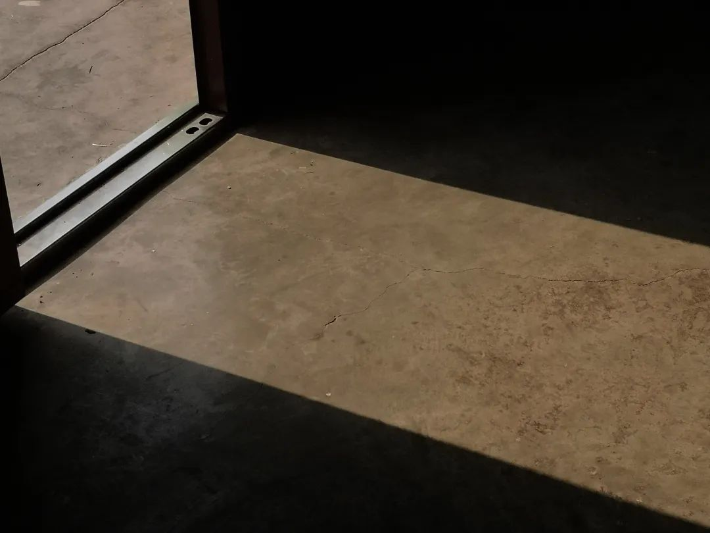
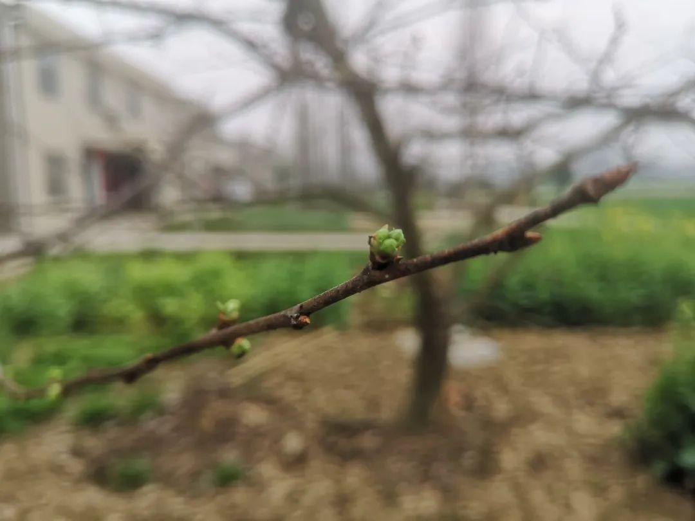
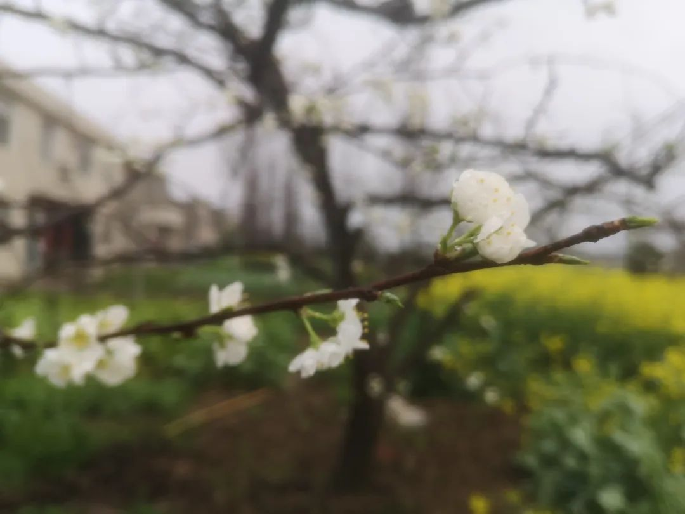

回武汉记（下）
原文链接 备份链接 在潜江第五周（2月18日—2月24日）的记录，21日空缺，为朋友讳。仍然回不了武汉。 2月18日 这两天看新闻很少。偶尔上微博，几乎不看朋友圈。唯一持续跟踪的，是疫情数据和省市文件的更新。数据相对固定，文件更新太多了， …

在潜江第七周（3.3—3.9）的记录。武汉昨天新增36例，拐点若隐若现。感觉《回武汉记》终于要名副其实了。
3月3日。
离开武汉的第43天。
疫期的生活，因为在写日记，且是每周一推，我觉得时间于我是以周来计算的。过去的六周，42天。一天天走过来，回头看，只觉得难以想象。我可能在过人生中最长的假期，也是最煎熬的假期。
我写了42天记录，每周微信推送，没想到上周的溅起了一点现实的浪花：中午，村支书开车上门，说看到了我上周的记录。继而解释说，最近几天他没有开车过来（我在记录里几次提到了这一点），是因为防控重心有所调整，他一直在村口卡点驻守。我也解释，我日记里所提，并无指向性，更不是批评，如实记录而已。言谈之间，各说各话。我惊讶于他对我的记录的敏感，一个多月里，村里的防控我屡有提及，虽然没有拔高，也绝不至于歪曲；他呢，大概也觉得我的记录不够全面。为了“全面”，我和郑对长约定晚上去村里的卡口，直观感受他们的工作。
晚七点，郑队长开着他买菜的三轮，带我去了村口。除了支书，还有四五个执勤的人在。
这个卡口是附近进出市区唯一的应急通道，涉及七个村、两个社区，管控期间流量不少，急事也多：有喝农药的，有玻璃划破了手的，有老人突然发病的……不少事还在半夜，他是村支书，晚上只他一人守夜（他说这是发挥“先锋模范”作用，做好了表率，也便于平时开展工作），睡不好觉是常态。我去看了他睡觉的地方，在一个帐篷里，一张单人床，床板断了，下面垫着砖头；被子上有“民政救灾”字样，是上面发的；被子上盖着一件军大衣，床脚边还有一个取暖器。支书说这帐篷密封一般，下雨时尤其明显，有天半夜漏雨，被子湿了大半，他用取暖器烤了一整夜。
防控的条件确实艰苦，我大概理解了支书的委屈，他和我微信交流时，说到许多人不理解他们的工作，遭了不少白眼。我的记录，自然不算“白眼”，但没有写到他们的工作也是事实。我在卡口待了接近一个小时。八点，他们说要出门巡逻，“主要是抓打麻将的”。我就自己回去了。从村口卡点到家，大概两三千米，正路上空荡荡的，一个人也没遇到。只在经过绕村而过的小河时，看到两个人顶着大灯，在河里捉鳝鱼。这个季节鳝鱼还不多，这两个人很熟练，我在桥这头时他们刚刚下河，过桥的工夫，一个人已经在喊“搞到了搞到了”。
3月4日，
离开武汉的第44天。
虽然没有新的通知，我还是在为回武汉做准备。其中重要的一项，是调整小溪的作息。自从回家，她都是吃母乳睡觉，回武汉后以奶粉为主，如果不能自然哄睡，大概会让母亲束手。十点半的一觉推后到十二点，我像在武汉一样，抱着她散步，一首歌没哼完，竟然顺利哄睡。下午三点的一觉取消了，推迟到五点。
入春之后，虫子多起来。院子里已有许多蚂蚁，连小溪也发现了。我们追着一只蚂蚁，从水泥地一直走到菜园边的泥地。泥地上虫子更多——准确地说，是虫子的痕迹多：那些明显的小洞，是蚯蚓钻出来哦；还有隐蔽的小洞，藏在一些均匀的沙粒般的碎土堆之下。土堆不过指甲盖大小，边缘的已经干燥，中间部分还很湿润。都是地底虫子推出来的，仔细看，可以明显发现碎土之下在不停拱动：虫子正在里面工作。
妻子去田埂上扯了一把野韭菜，拨去浮土，伸一根野韭菜进去。她小时候常常这样钓虫子。但多年没玩，手生了；也许是虫子习性变了。一把野韭菜用完，辗转了四五个虫洞，一只虫子也没钓出来。有一个洞里有振翅之声，我们见钓不出来，就拿了一把铁锹，翻开土，竟然是一只蜂子，一扇翅膀飞走了。
我全程看得目不转睛，小溪虽然看不明白，也很投入。蜂子飞走，我上网查，发现这大概是一种泥蜂。这是乡居生活的乐趣所在。我小时候也翻土捉蚯蚓、土狗和蝈蝈，粘网捕知了、蜻蜓，彼时场景，至今忘不了。现在的参与，固然也是出于童心和好奇，但掺杂了“让小溪以此亲近自然”的功利目的。
乡居于我，也是重新认识自然的机会。之前发现的腊梅低头生长，即是一例。今天又有来自樱花和李树花的教诲。门口的樱花开了不过一周，这两天已经在凋谢了。二妈说，樱花开多少花，就结多少果。我小时候看野樱花很多，在武汉见樱花机会也不少，只是从未想过花与果的这一层关系。樱桃树旁边的李子树也是如此，一花一果。只是这果子只是挂上而已，最后并不能尽数长大。
樱花在谢，李花即将开放。如果不是连着三天温度下降，估计已有开的。朋友剑男在湖北通山，他今天发朋友圈说，李花大半已开。我看了他发的图，李花挤在一起，充满了生机。过两天我也可以看到了。
潜江最近的日常，都与春天有关。疫情之初，就有“等到春暖花开”一说，现在已经春暖花开了，每天下降的数据也算曙光显现。然而，不断爆出来的逝者，却给这曙光加了些阴沉之气：比如昨天逝世的、和李文亮医生同属武汉中心医院眼科的梅仲明医生，2月28号逝世而昨天才为我所知的普通老人刘立（他全家感染，为求助学用微博，在2月5日凌晨1点34分发了一条“你好”）……还有多少沉默的、连一声“你好”都没有留下的逝者？无论春光多么明媚，逝者的阴郁都不会消散。 过去他们和我们有共同的呼吸，此刻和将来，他们也会用缺席的音容提醒我们，灾难面前，没有谁可以轻言“胜利”。
3月5日。
离开武汉的第45天。
又是个大晴天。岳母一早带柚子出门，沿麦田走了一圈，回来时拿着一株麦子，已经挂穗，只差灌浆了，这是野外生长的杂株，正经种的麦子离挂穗还有个把月。
门口的麦田一望无边，我也带小溪去看过，她对这种无边无际的东西兴趣还不大。在潜江的这段时间，小溪活动半径极大，门口的菜园、麦地，屋后的河渠、稻田，满目都是新鲜之物。回武汉后估计有段时间不习惯：活动空间只有一个不到百平的房子，即使下楼去户外，也只是一个小广场，满目是商店的招牌和摇摇车、广场舞的音乐。不过这两天调整作息顺利，似乎又说明她的适应能力比我们想象的强；中午和母亲视频时，她一改前几天爱理不理的样子，抱着手机对着她奶奶又是摸又是亲的——我们担心她已经忘记了奶奶，看来是多虑了。
外公的墓地已经买下。此事既定，需要他操心的事就不多了。在这之前，他还记挂我小表弟的婚事。年前表弟成功提了亲，也无须他担心了。表弟提亲之后，准备正月初四定亲，武汉封城，他困在城中，定亲只得顺延。家中的酒席食材已经准备好了，一头猪，十几只鸡，以及其他小菜。开始还担心浪费，封镇之后，这些食材起了大用，尤其是那只猪。
镇上完全没有肉卖，各家都是吃自己储备的肉。外公、外婆和两个舅舅一起生活，一共十三个人，一头猪不过是勉强够吃而已。我们家也在一个姑父家买了一头猪，年前只拿了不到一百斤，现在也很紧张，仅剩一只火腿了。
这些都是视频聊天时母亲告诉我的。我比较吃惊的是镇上完全没有肉卖，后来也想通了：正常的年份，年关买肉的人确实少，乡下家家户户都喂了猪，镇上的人腊月就通过各种渠道买好了熏肉。现在封锁一个多月，肉的缺口也不大；如果继续封锁，大家吃完了储备的熏肉，才是真正需要肉之时。不知镇上如何处理。
潜江不缺肉了，只是贵。今天的肉价是35元一斤。比前几天便宜了一块。武汉有一种“政府储备冻猪肉特价包”，精瘦肉10元/斤、五花肉12元/斤、肋排17元/斤、里脊肉11元/斤、中方（肋排五花一体）10元/斤、前后腿上肉7元/斤。这价格自然很诱人，可惜数量有限，且定点投放，不容易抢到。
不能再写肉了，写水果吧。家里还有两个苹果，一串香蕉，可以坚持两天。这两天我吃水果也少，偶尔吃苹果，也不是按个吃的，而是以块计算。但是想吃水果的愿望并不强烈（上次买的草莓，吃得不够积极，最后几个都烂掉了），如果说想吃点什么，当然还是肉。
我去村采购群里，让郑队长代买几斤苹果。顺手翻了下聊天记录，大家需求最多的是食物：青菜、水果、饼干；文具次之：英语本、数学本、手抄报、铅笔、彩铅、透明胶、转车刀；还有尿不湿、护臀膏……要买的多，且琐碎，郑队长的角色，相当于防控指挥部说的“网格员”。村里的网格员，一点不比城市的轻松。
3月6日。
离开武汉的第46天。
四天前吃了今年春天第一盘蒜薹，今天菜园又有蒜薹冒出来。明天大概可以吃到第二盘。这几天阴晴不定，温度高一天低一天，蒜薹不受影响，屋后竹笋长势却不喜人，上桌的日期看来要推迟。
我几乎每天都会写到食物，既写丰盛，也写匮乏，武汉的邻居老田早上发微信给我，说武汉物资充足，水果、蔬菜、肉随便吃，还附上了他刚团购的清单：泡藕带四袋，黑芝麻汤圆一袋，小黄鱼350克，牛腱肉两斤，鸡爪两斤，带鱼一箱，洋葱两斤，胡萝卜三斤，猕猴桃、菠萝、芒果各四斤左右。我算了一下，一共541元。确实充足，价格也不算贵。
老田参加的团购，算是业主的自主组织：团长就是同一栋楼的邻居。所以比较满意。但封城以来武汉居民的生活物资供应，不满意的多，引出的新闻不少，先有武汉嫂子的汉骂，后有青山区中建开元公馆那几声“假的假的”“形式主义”。汉骂之后，有个群里几位老同志声讨武汉嫂子：“她以为她高人一等，应该享受别人的服务，根本不考虑这些为她们服务的人是冒着被感染的危险。”另一个人附和说：“文笔好的都不肯为这些基层豁命的写，下社区的人真辛苦，家人牵肠挂肚，非常时期，汉骂嫂还要享受平常时期的服务，有良心的人都不会支持她。”群主见了这几位发言，马上把群解散了。
昨天香港发现一名确诊患者的宠物狗低程度感染新冠病毒，所谓“低程度感染”，表明病毒不能在这只狗身上被很好地复制。疫期之初，我见过一些杀狗的视频，暴虐之极。香港的这个“低程度感染”，估计又要掀起一轮杀狗风潮。果然，今天我们村群里有人发了一条通知：
各村（居）：鉴于目前正是疫情防控的关键期，根据有关资料显示，狗也属于可能感染传播新冠病毒的动物，为防止其给人民生命带来不安全隐患。请各村居通知养狗的家庭，疫情防控期间将狗隔离圈养，有关单位将组织打狗队，对四处乱跑之狗进行捕杀。请各村（居）做好宣传劝导工作。
通知没有标明来源，不像官方通告，希望是好事者编造的。
今天潜江有个官方的通告，“文明餐桌公筷公勺倡议书”。公筷公勺，之前钟南山也提过，许多地方很早也发过倡议了，潜江这个倡议里面有一条是针对学校的，说要扎实有效开展“长者先动筷、夹菜用公筷”线上主题班会系列活动。我估计学校很快要落实，我和侄女说了，开这个班会的时候，要喊上我。
今天周五，下午在钉钉群里汇报了一周工作。出版社的大群里，一个副总说有同事在出版社大楼，可以代同事们取纸稿或者传电子稿，前提是这稿子确实急迫。我没有报稿子过去。纸稿无法寄送到潜江，电子稿传我用处也不大——编辑后无法传排版修改。名义上的在线复工其实快一个月了（从2月14日算起），可做的其实有限。公司的要求，也并不是要大家做点什么，仅仅是保持工作状态，不要在这长假里锈掉了。
武汉何时解除防控限制？今天中央指导组有一个很个人化、很诗意的回应：“早晨出门的时候，我看到门前的樱花已经开放，它告诉我们冬天已过去，春天来了，我想大家期待的那一天不会太远。”
3月7日。
离开武汉的第47天。
武汉的新增病例终于降到两位数了：74例。上一次两位数，还是一月，我还没有离开武汉。拐点若隐若现，以前我和朋友说，武汉新增100以内，我就可以回武汉了。现在依然这么想。周末一过就是10号，继续延迟是肯定的，只看时间长短。
二叔在杨市医院工作，一般上夜班。今天没有回来，说是医院不许外出。我有点怀疑这个消息的真实性。医院没有理由这么做，除非是被隔离。二妈是信以为真的，我也不好细问。
今天被“感恩”刷屏。我一直讨厌这个词，因为不能容忍它和宾语搭配出现——感恩某某某。这根本就是一个病句啊。可是从媒体到个人，都这么用。我觉得膈应，今天之后，膈应更添几分。我们可以感谢，你们不能要求我们感谢。太多大老爷真把自己当青天了，不会意识到这天是被平头百姓撑起来的。
李花终于开了。几乎是我看着开的。2月25号我拍过一枝，刚露绿色的叶苞。再过几天，应该就会开得灿烂。不过李花再灿烂也是节制的，这一点比樱花好。我总觉得樱花太热烈，太忘我，以至于短暂。屋后有一树桃花，也是节制的，灼灼其华，是每一朵花的事，并非一树如此。今天我拍了桃花的花苞，再过几天去拍她的绽放。
李花和桃花开放的过程，我小时候是见过的。但印象不深。见得最多的是梨花，记事起家门口就有四棵梨树，每年看他们开花结果。我准备这两天去找一棵梨树看看。
还有竹笋。昨天才说长得慢，今天去看，密密麻麻拱了一地。前些天刚露头的，现在已经有一尺多高——不能吃了，它们会长成竹子。岳母说每年都是如此。蒜薹可以不放过一棵，对竹笋却大可以宽容，吃一半，放一半。老百姓都有宽容之道，哪怕只是一种仪式。我们小时候吃水果也是如此：绝不吃完，要留一些在树上。
潜江今天发了一份承诺书，中百仓储、武商超市这些地方联合。说对大白菜、青椒、精瘦肉、中晚籼米、鸡蛋等19种重点生活物资，作出降价销售。我关心的还是肉类。精瘦肉32一斤，五花肉30一斤。大概降了五元。潜江还出了一个市内分级分区，高、中、低三级风险，对应强制、重点、常规管控，我们所在的杨市办事处是中风险区。各区措施不同，通知上说得很细，细到看一遍还不能明白。
3月8日。
离开武汉第48天。
有一种蛋叫“引窝蛋”，放在鸡窝里，像一个定位装置，确保母鸡不把蛋下在别处。侄女和邻居的孩子打乒乓球，球破了，岳父说：“我去鸡窝里拿一个来。”引窝蛋有时候是真的鸡蛋，有时候是鸡蛋的模仿物——一块鹅卵石，或者一个乒乓球。这是欺骗鸡的感情。
我很多年不吃鸡蛋了，因为过敏。小溪爱吃，主要吃蛋清，最近一次可以吃一个。刚到潜江时，她还爱看鸡叫，看鸡受惊吓时的连飞带跳，最近喜欢看鸡下蛋，那是鸡最安静的时候。她站在鸡笼边，我蹲在鸡笼边，两个人等鸡下完蛋。她指着鸡窝说：“蛋蛋。”我说：“明天给小溪煮了吃。”她说：“嗯。”最多的时候，鸡窝里有九个蛋。
保险快到期了，收到好几条短信提醒。去年买保险，先是给小溪买。朋友介绍的熟人，我没有做什么功课就上了车，后来发现被坑，果断退掉。朋友依然在他熟人那里买，我让他退，他嫌麻烦，也许是抹不开情面，一直没退。去网上钻研了半个月，大致弄清楚了各种陷阱，给小溪买了之后，又给家人买了一点，还力劝我哥给他的两个孩子买了重疾险。去年四月在潜江，翻了侄女和岳父的保险合同。岳父的还好，侄女的教育保险，每年缴大几千，连缴十几年可以取出，也是骗人的。欺负家里人看不懂合同细则。其实我也不太能看懂里面的弯弯绕，钻研半个月不能让你真的变得专业，只是不被骗而已。
我在许多事上都想尽量专业一点。装修房子之前研究地板、涂料、平开窗户，买手机前研究线性马达、处理器、屏幕，买车前研究干湿离合、独立悬挂、发动机型号，买个电视也会去论坛看各种索尼吹的调研……大费周章，所求的也是一个“不被骗”，实际的用户体验，不至于有本质区别：电视的一点色差你看不到，手机处理器是高通还是麒麟不会影响你发微信，变速箱的顿挫、起步线性、百公里加速多少秒也不是一个新手司机能实际感受到的。
不被骗，不蒙在鼓里，在这个时代几乎是不可能的。专业的壁垒也就罢了，常识的蒙蔽则不能容忍：一个记者不用追着张文宏问病毒和传染的问题，但可以去查一下一月武汉病毒的疑云。实际的情况却往往相反。
疫情已经全球化了。韩国、意大利、伊朗都超过5000例了。美国也不少。NBA做了新冠的备忘录，可能空场比赛；球员与球迷互动时，号召以击拳代替击掌——因为掌心汗液多。国外每天新增也以千计。国内却已经基本得到控制：昨天武汉新增仅41例。
3月9日，
离开武汉第49天。
早上给一个刊物整理诗。翻出去年下半年写的，重温诗里的生活，真真是恍如隔世：抱小溪在院子里散步，她睡醒后在黄昏里哭了几声；在内蒙古遇到一场大雨，马群依然安静地在草场吃草；去九真山爬山，深夜从没有路的林子里跑下来……只有经过风雨，才更觉得风雨之前的平静。有一首诗《看医生》，写到十几年前去武汉市医疗救治中心（就是如今的武汉市金银潭医院）：我背着CT片、X光片从湖北大学出发，一路转车，最后坐291路到三五〇六（一个军工厂的代号）下车，步行五六百米去医院，其情其景，和现在揣着CT片奔走在武汉街道上的病人，何其相似，又截然不同。
2月初，看到金银潭一个医生采访时大哭的视频。我认得这个医生，十几年前我在医疗救治中心住院时，他是我的管床医生。这才意识到，武汉这场风暴的中心地带，就是我曾经住过的地方。我以前一直管那里叫三五〇六，我住院是五月，医院旁边就是一个大草坡，每天晚饭后，我都去那里散步，等天黑了，再慢慢转回医院。那是一段难忘的悠闲时光。
中国移动3月6号发了一条消息，是武汉市卫健委为武汉人提供的心理健康服务渠道：除了心理热线、心理援助、在线倾诉，还有一个心理学博士推荐的书：彭聃龄《普通心理学》、孟昭兰《情绪心理学》、维奥斯特《必要的丧失》、萨提亚《萨提亚家庭治疗模式》和《登天的感觉》等心理学入门书籍，《少有人走的路》《不抱怨的世界》《乌合之众》《非暴力沟通》等心理调节书籍。这条消息我前天没有看到，今天朋友提醒，才在手机里翻出来。除了《乌合之众》，其他书我都没看过。只是从书名看，鸡汤味很浓，还是于丹式的鸡汤：不抱怨社会不公，不抱怨处世艰难。
我们小区也弄了一个业主推荐的疫期书单，“用书籍治愈城市的内心”，物业很应景地给每本书配上的疫期文案。《老人与海》：“从不向每一场博弈低头：武汉人就叫不服周”；《围城》：“英雄逆行而入，武汉是一座永远不想逃离的围城”；还有《活着》《平凡的世界》《曾国藩家书》，都很应景。
潜江今天风雨大作。我一天没怎么出门，只中间趁雨小出去拍了一张李花的图：李花全开了，风雨中已经落了不少。旁边的油菜地，虽然岳父围了一圈架子，还是有油菜倒在地上——不是风吹的，是油菜沾了太多雨水变得太重。晚上风止雨停，在洗手间看到窗外大白。打开门发现是月亮。我抱小溪出去，她瞬间发现了天上的大家伙，一边指，一边叽里咕噜。看日历才知道今天是农历二月十六，这是我们回潜江后第二次看到圆月。上次是正月十五，那时小溪对月亮还不太敏感，要我们指给她看。只过了一个月，就变成她指给我们看。



原文链接 备份链接 在潜江第五周（2月18日—2月24日）的记录，21日空缺，为朋友讳。仍然回不了武汉。 2月18日 这两天看新闻很少。偶尔上微博，几乎不看朋友圈。唯一持续跟踪的，是疫情数据和省市文件的更新。数据相对固定，文件更新太多了， …
原文链接 备份链接 第六周（2.25—3.2）的记录。头两周的记录叫“隔离十四天”，后面以为回武汉为时不远，以“回武汉记”写了三周，每周推送时用上、中、下区分。现在无字可用了，只能老老实实用数字。 2月25日， 离开武汉的第36天。 我 …
原文链接 备份链接 这两天看新闻很少。偶尔上微博，几乎不看朋友圈。唯一持续跟踪的，是疫情数据和省市文件的更新。数据相对固定，文件更新太多了，大有应接不暇之感。日记越来越枯燥、单调，人却比之前平静了不少。 昨天说潜江没有针对前两天激增的数 …
原文链接 备份链接 疫期见闻已经写了四周，疫情还没有结束；《回武汉记》写了14天，还回不了武汉。 上周推送时，想着分上下可以推完，现在只能临时加上“中”。 2月11日，正月十八。 这几天关注了许多公众号。湖北省人民政府、武汉市长专线、潜江 …
原文链接 备份链接 题目叫“回武汉记”，其实人还在潜江，一步也走不了。所以应该叫“准备回武汉记”。希望下周的记录，是真正的回城记。 2月4日，正月十二。 隔离十四天结束，写了十四天日记。接下来的记录，应该叫“回武汉记”——虽然回武汉还没有 …